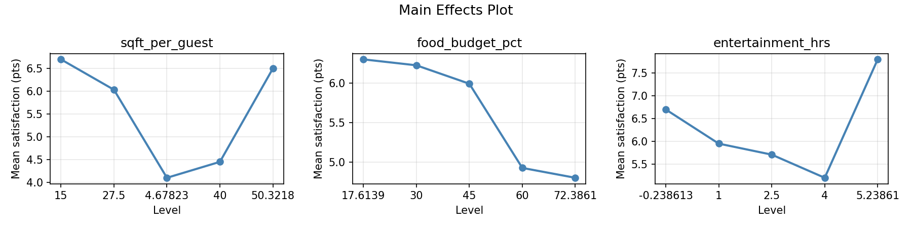
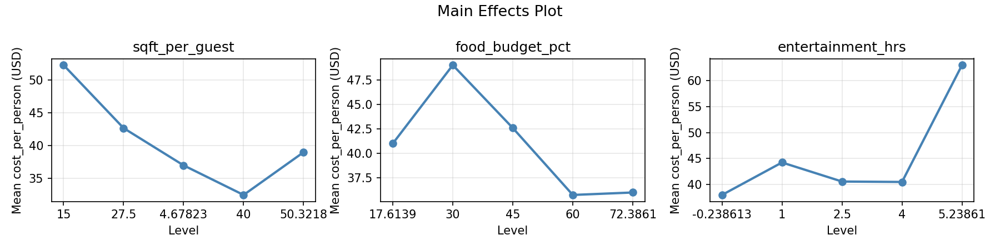
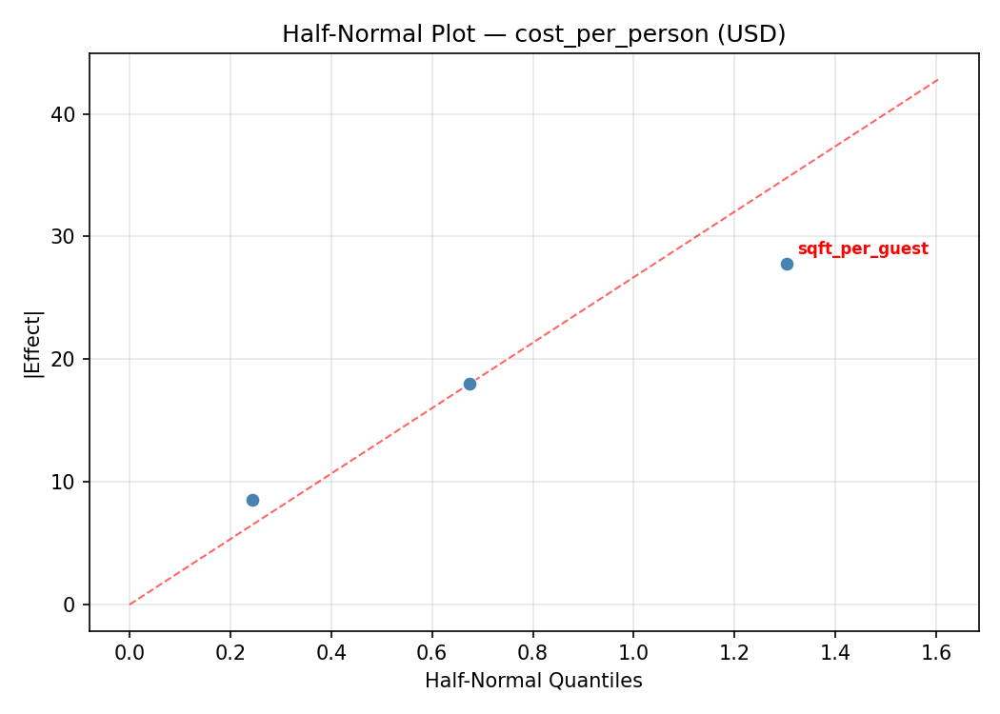
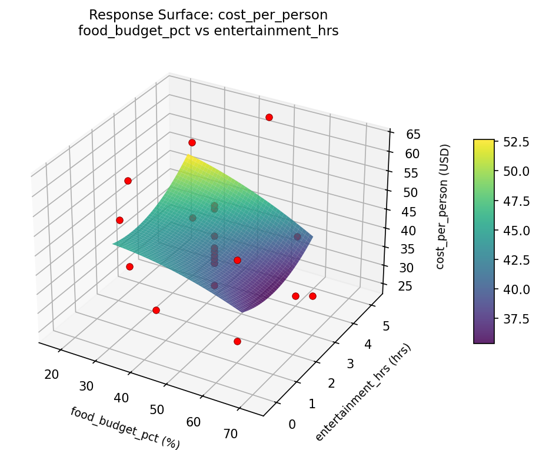
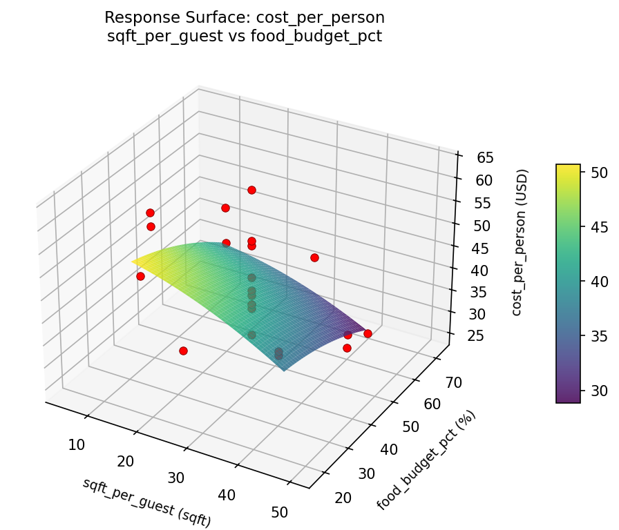
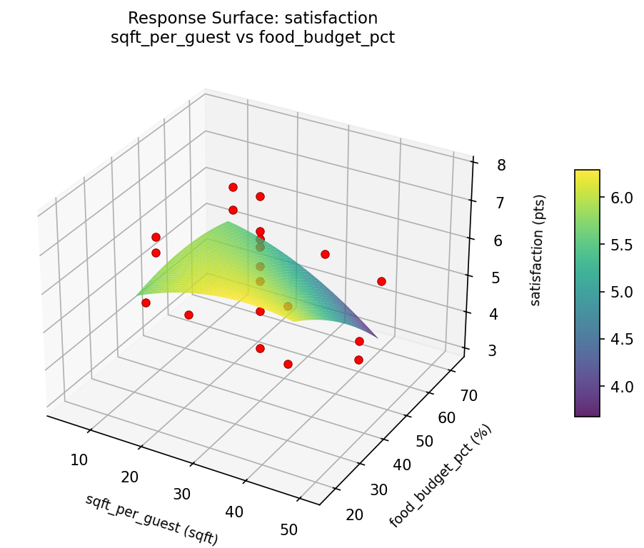

Summary
This experiment investigates party planning optimization. Central composite design to maximize guest satisfaction and minimize cost per person by tuning venue size, food budget ratio, and entertainment hours.
The design varies 3 factors: sqft per guest (sqft), ranging from 15 to 40, food budget pct (%), ranging from 30 to 60, and entertainment hrs (hrs), ranging from 1 to 4. The goal is to optimize 2 responses: satisfaction (pts) (maximize) and cost per person (USD) (minimize). Fixed conditions held constant across all runs include guests = 50, event type = birthday.
A Central Composite Design (CCD) was selected to fit a full quadratic response surface model, including curvature and interaction effects. With 3 factors this produces 22 runs including center points and axial (star) points that extend beyond the factorial range.
Quadratic response surface models were fitted to capture potential curvature and factor interactions. The RSM contour plots below visualize how pairs of factors jointly affect each response.
Key Findings
For satisfaction, the most influential factors were food budget pct (44.0%), entertainment hrs (39.3%), sqft per guest (16.7%). The best observed value was 7.8 (at sqft per guest = 27.5, food budget pct = 45, entertainment hrs = -0.238613).
For cost per person, the most influential factors were food budget pct (37.6%), sqft per guest (32.8%), entertainment hrs (29.6%). The best observed value was 25.0 (at sqft per guest = 40, food budget pct = 30, entertainment hrs = 4).
Recommended Next Steps
- Run confirmation experiments at the predicted optimal settings to validate the model.
- Consider whether any fixed factors should be varied in a future study.
Experimental Setup
Factors
| Factor | Low | High | Unit |
|---|
sqft_per_guest | 15 | 40 | sqft |
food_budget_pct | 30 | 60 | % |
entertainment_hrs | 1 | 4 | hrs |
Fixed: guests = 50, event_type = birthday
Responses
| Response | Direction | Unit |
|---|
satisfaction | ↑ maximize | pts |
cost_per_person | ↓ minimize | USD |
Configuration
{
"metadata": {
"name": "Party Planning Optimization",
"description": "Central composite design to maximize guest satisfaction and minimize cost per person by tuning venue size, food budget ratio, and entertainment hours"
},
"factors": [
{
"name": "sqft_per_guest",
"levels": [
"15",
"40"
],
"type": "continuous",
"unit": "sqft"
},
{
"name": "food_budget_pct",
"levels": [
"30",
"60"
],
"type": "continuous",
"unit": "%"
},
{
"name": "entertainment_hrs",
"levels": [
"1",
"4"
],
"type": "continuous",
"unit": "hrs"
}
],
"fixed_factors": {
"guests": "50",
"event_type": "birthday"
},
"responses": [
{
"name": "satisfaction",
"optimize": "maximize",
"unit": "pts"
},
{
"name": "cost_per_person",
"optimize": "minimize",
"unit": "USD"
}
],
"settings": {
"operation": "central_composite",
"test_script": "use_cases/198_party_planning/sim.sh"
}
}
Experimental Matrix
The Central Composite Design produces 22 runs. Each row is one experiment with specific factor settings.
| Run | sqft_per_guest | food_budget_pct | entertainment_hrs |
|---|
| 1 | 27.5 | 45 | 2.5 |
| 2 | 40 | 30 | 4 |
| 3 | 15 | 60 | 1 |
| 4 | 27.5 | 72.3861 | 2.5 |
| 5 | 27.5 | 45 | 2.5 |
| 6 | 4.67823 | 45 | 2.5 |
| 7 | 27.5 | 45 | -0.238613 |
| 8 | 27.5 | 45 | 2.5 |
| 9 | 40 | 60 | 1 |
| 10 | 50.3218 | 45 | 2.5 |
| 11 | 27.5 | 45 | 2.5 |
| 12 | 27.5 | 17.6139 | 2.5 |
| 13 | 27.5 | 45 | 2.5 |
| 14 | 15 | 30 | 4 |
| 15 | 27.5 | 45 | 2.5 |
| 16 | 40 | 30 | 1 |
| 17 | 27.5 | 45 | 5.23861 |
| 18 | 40 | 60 | 4 |
| 19 | 27.5 | 45 | 2.5 |
| 20 | 15 | 30 | 1 |
| 21 | 15 | 60 | 4 |
| 22 | 27.5 | 45 | 2.5 |
Step-by-Step Workflow
1
Preview the design
$ doe info --config use_cases/198_party_planning/config.json
2
Generate the runner script
$ doe generate --config use_cases/198_party_planning/config.json \
--output use_cases/198_party_planning/results/run.sh --seed 42
3
Execute the experiments
$ bash use_cases/198_party_planning/results/run.sh
4
Analyze results
$ doe analyze --config use_cases/198_party_planning/config.json
5
Get optimization recommendations
$ doe optimize --config use_cases/198_party_planning/config.json
6
Multi-objective optimization
With 2 competing responses, use --multi to find the best compromise via Derringer–Suich desirability.
$ doe optimize --config use_cases/198_party_planning/config.json --multi
7
Generate the HTML report
$ doe report --config use_cases/198_party_planning/config.json \
--output use_cases/198_party_planning/results/report.html
Features Exercised
| Feature | Value |
|---|
| Design type | central_composite |
| Factor types | continuous (all 3) |
| Arg style | double-dash |
| Responses | 2 (satisfaction ↑, cost_per_person ↓) |
| Total runs | 22 |
Analysis Results
Generated from actual experiment runs using the DOE Helper Tool.
Response: satisfaction
Top factors: food_budget_pct (44.0%), entertainment_hrs (39.3%), sqft_per_guest (16.7%).
ANOVA
| Source | DF | SS | MS | F | p-value |
|---|
| Source | DF | SS | MS | F | p-value |
| sqft_per_guest | 4 | 3.2358 | 0.8090 | 0.389 | 0.8112 |
| food_budget_pct | 4 | 8.6625 | 2.1656 | 1.043 | 0.4371 |
| entertainment_hrs | 4 | 6.5758 | 1.6440 | 0.791 | 0.5593 |
| Lack | of | Fit | 2 | 1.5458 | 0.7729 |
| Pure | Error | 7 | 14.5400 | | |
| Error | 9 | 16.0858 | 2.0771 | | |
| Total | 21 | 34.5600 | 1.6457 | | |
Pareto Chart

Main Effects Plot

Normal Probability Plot of Effects

Half-Normal Plot of Effects

Model Diagnostics

Response: cost_per_person
Top factors: food_budget_pct (37.6%), sqft_per_guest (32.8%), entertainment_hrs (29.6%).
ANOVA
| Source | DF | SS | MS | F | p-value |
|---|
| Source | DF | SS | MS | F | p-value |
| sqft_per_guest | 4 | 445.1742 | 111.2936 | 1.092 | 0.4165 |
| food_budget_pct | 4 | 400.9242 | 100.2311 | 0.983 | 0.4633 |
| entertainment_hrs | 4 | 241.9242 | 60.4811 | 0.593 | 0.6763 |
| Lack | of | Fit | 2 | 255.0682 | 127.5341 |
| Pure | Error | 7 | 713.5000 | | |
| Error | 9 | 968.5682 | 101.9286 | | |
| Total | 21 | 2056.5909 | 97.9329 | | |
Pareto Chart

Main Effects Plot

Normal Probability Plot of Effects

Half-Normal Plot of Effects

Model Diagnostics

Response Surface Plots
3D surfaces fitted with quadratic RSM. Red dots are observed data points.
cost per person food budget pct vs entertainment hrs

cost per person sqft per guest vs entertainment hrs

cost per person sqft per guest vs food budget pct

satisfaction food budget pct vs entertainment hrs

satisfaction sqft per guest vs entertainment hrs

satisfaction sqft per guest vs food budget pct

Multi-Objective Optimization
When responses compete, Derringer–Suich desirability finds the best compromise.
Each response is scaled to a 0–1 desirability, then combined via a weighted geometric mean.
Overall Desirability
D = 0.7008
Per-Response Desirability
| Response | Weight | Desirability | Predicted | Dir |
|---|
satisfaction |
1.5 |
|
6.70 0.7418 6.70 pts |
↑ |
cost_per_person |
1.0 |
|
38.00 0.6435 38.00 USD |
↓ |
Recommended Settings
| Factor | Value |
|---|
sqft_per_guest | 27.5 sqft |
food_budget_pct | 45 % |
entertainment_hrs | 2.5 hrs |
Source: from observed run #5
Trade-off Summary
Sacrifice = how much worse than single-objective best.
| Response | Predicted | Best Observed | Sacrifice |
|---|
cost_per_person | 38.00 | 25.00 | +13.00 |
Top 3 Runs by Desirability
| Run | D | Factor Settings |
|---|
| #8 | 0.7008 | sqft_per_guest=40, food_budget_pct=30, entertainment_hrs=1 |
| #13 | 0.6684 | sqft_per_guest=4.67823, food_budget_pct=45, entertainment_hrs=2.5 |
Model Quality
| Response | R² | Type |
|---|
cost_per_person | 0.6310 | quadratic |
Full Multi-Objective Output
============================================================
MULTI-OBJECTIVE OPTIMIZATION
Method: Derringer-Suich Desirability Function
============================================================
Overall desirability: D = 0.7008
Response Weight Desirability Predicted Direction
---------------------------------------------------------------------
satisfaction 1.5 0.7418 6.70 pts ↑
cost_per_person 1.0 0.6435 38.00 USD ↓
Recommended settings:
sqft_per_guest = 27.5 sqft
food_budget_pct = 45 %
entertainment_hrs = 2.5 hrs
(from observed run #5)
Trade-off summary:
satisfaction: 6.70 (best observed: 7.80, sacrifice: +1.10)
cost_per_person: 38.00 (best observed: 25.00, sacrifice: +13.00)
Model quality:
satisfaction: R² = 0.6453 (quadratic)
cost_per_person: R² = 0.6310 (quadratic)
Top 3 observed runs by overall desirability:
1. Run #5 (D=0.7008): sqft_per_guest=27.5, food_budget_pct=45, entertainment_hrs=2.5
2. Run #8 (D=0.7008): sqft_per_guest=40, food_budget_pct=30, entertainment_hrs=1
3. Run #13 (D=0.6684): sqft_per_guest=4.67823, food_budget_pct=45, entertainment_hrs=2.5
Full Analysis Output
=== Main Effects: satisfaction ===
Factor Effect Std Error % Contribution
--------------------------------------------------------------
food_budget_pct 3.2500 0.2735 44.0%
entertainment_hrs 2.9000 0.2735 39.3%
sqft_per_guest 1.2333 0.2735 16.7%
=== ANOVA Table: satisfaction ===
Source DF SS MS F p-value
-----------------------------------------------------------------------------
sqft_per_guest 4 3.2358 0.8090 0.389 0.8112
food_budget_pct 4 8.6625 2.1656 1.043 0.4371
entertainment_hrs 4 6.5758 1.6440 0.791 0.5593
Lack of Fit 2 1.5458 0.7729 0.372 0.7021
Pure Error 7 14.5400 2.0771
Error 9 16.0858 2.0771
Total 21 34.5600 1.6457
=== Summary Statistics: satisfaction ===
sqft_per_guest:
Level N Mean Std Min Max
------------------------------------------------------------
15 4 6.1750 0.9777 4.8000 7.1000
27.5 12 5.4667 1.5341 3.1000 7.8000
4.67823 1 6.0000 0.0000 6.0000 6.0000
40 4 6.1500 0.9256 4.8000 6.8000
50.3218 1 6.7000 0.0000 6.7000 6.7000
food_budget_pct:
Level N Mean Std Min Max
------------------------------------------------------------
17.6139 1 3.1000 0.0000 3.1000 3.1000
30 4 6.3500 1.0472 4.8000 7.1000
45 12 5.8000 1.3731 3.6000 7.8000
60 4 5.9750 0.7890 4.8000 6.5000
72.3861 1 5.6000 0.0000 5.6000 5.6000
entertainment_hrs:
Level N Mean Std Min Max
------------------------------------------------------------
-0.238613 1 3.6000 0.0000 3.6000 3.6000
1 4 6.2250 1.0046 4.8000 7.1000
2.5 12 5.6833 1.4326 3.1000 7.8000
4 4 6.1000 0.8907 4.8000 6.8000
5.23861 1 6.5000 0.0000 6.5000 6.5000
=== Main Effects: cost_per_person ===
Factor Effect Std Error % Contribution
--------------------------------------------------------------
food_budget_pct 21.0000 2.1099 37.6%
sqft_per_guest 18.3333 2.1099 32.8%
entertainment_hrs 16.5000 2.1099 29.6%
=== ANOVA Table: cost_per_person ===
Source DF SS MS F p-value
-----------------------------------------------------------------------------
sqft_per_guest 4 445.1742 111.2936 1.092 0.4165
food_budget_pct 4 400.9242 100.2311 0.983 0.4633
entertainment_hrs 4 241.9242 60.4811 0.593 0.6763
Lack of Fit 2 255.0682 127.5341 1.251 0.3431
Pure Error 7 713.5000 101.9286
Error 9 968.5682 101.9286
Total 21 2056.5909 97.9329
=== Summary Statistics: cost_per_person ===
sqft_per_guest:
Level N Mean Std Min Max
------------------------------------------------------------
15 4 44.2500 11.3541 36.0000 61.0000
27.5 12 39.6667 10.1742 25.0000 63.0000
4.67823 1 52.0000 0.0000 52.0000 52.0000
40 4 41.0000 5.3541 38.0000 49.0000
50.3218 1 58.0000 0.0000 58.0000 58.0000
food_budget_pct:
Level N Mean Std Min Max
------------------------------------------------------------
17.6139 1 25.0000 0.0000 25.0000 25.0000
30 4 46.0000 11.5181 36.0000 61.0000
45 12 43.0833 10.6725 28.0000 63.0000
60 4 39.2500 1.2583 38.0000 41.0000
72.3861 1 44.0000 0.0000 44.0000 44.0000
entertainment_hrs:
Level N Mean Std Min Max
------------------------------------------------------------
-0.238613 1 28.0000 0.0000 28.0000 28.0000
1 4 44.5000 11.0905 38.0000 61.0000
2.5 12 43.0833 11.0738 25.0000 63.0000
4 4 40.7500 5.6789 36.0000 49.0000
5.23861 1 41.0000 0.0000 41.0000 41.0000
Optimization Recommendations
=== Optimization: satisfaction ===
Direction: maximize
Best observed run: #18
sqft_per_guest = 27.5
food_budget_pct = 45
entertainment_hrs = -0.238613
Value: 7.8
RSM Model (linear, R² = 0.2308, Adj R² = 0.1026):
Coefficients:
intercept +5.8000
sqft_per_guest -0.0771
food_budget_pct -0.0136
entertainment_hrs -0.7333
RSM Model (quadratic, R² = 0.6828, Adj R² = 0.4449):
Coefficients:
intercept +6.0079
sqft_per_guest -0.0771
food_budget_pct -0.0136
entertainment_hrs -0.7333
sqft_per_guest*food_budget_pct +0.1250
sqft_per_guest*entertainment_hrs -0.2500
food_budget_pct*entertainment_hrs +1.3250
sqft_per_guest^2 -0.0489
food_budget_pct^2 -0.0489
entertainment_hrs^2 -0.2139
Curvature analysis:
entertainment_hrs coef=-0.2139 concave (has a maximum)
food_budget_pct coef=-0.0489 negligible curvature
sqft_per_guest coef=-0.0489 negligible curvature
Notable interactions:
food_budget_pct*entertainment_hrs coef=+1.3250 (synergistic)
Predicted optimum (from quadratic model, at observed points):
sqft_per_guest = 40
food_budget_pct = 30
entertainment_hrs = 1
Predicted value: 7.8159
Surface optimum (via L-BFGS-B, quadratic model):
sqft_per_guest = 33.6207
food_budget_pct = 30
entertainment_hrs = 1
Predicted value: 7.8287
Model quality: Moderate fit — use predictions directionally, not precisely.
Factor importance:
1. entertainment_hrs (effect: 3.7, contribution: 55.4%)
2. sqft_per_guest (effect: 1.6, contribution: 24.0%)
3. food_budget_pct (effect: 1.4, contribution: 20.6%)
=== Optimization: cost_per_person ===
Direction: minimize
Best observed run: #20
sqft_per_guest = 40
food_budget_pct = 30
entertainment_hrs = 4
Value: 25.0
RSM Model (linear, R² = 0.3185, Adj R² = 0.2049):
Coefficients:
intercept +42.1364
sqft_per_guest -2.2526
food_budget_pct -0.8301
entertainment_hrs -6.2365
RSM Model (quadratic, R² = 0.7608, Adj R² = 0.5815):
Coefficients:
intercept +41.3206
sqft_per_guest -2.2526
food_budget_pct -0.8301
entertainment_hrs -6.2365
sqft_per_guest*food_budget_pct +3.0000
sqft_per_guest*entertainment_hrs +0.7500
food_budget_pct*entertainment_hrs +9.2500
sqft_per_guest^2 +1.3579
food_budget_pct^2 -1.6421
entertainment_hrs^2 +1.5079
Curvature analysis:
food_budget_pct coef=-1.6421 concave (has a maximum)
entertainment_hrs coef=+1.5079 convex (has a minimum)
sqft_per_guest coef=+1.3579 convex (has a minimum)
Notable interactions:
food_budget_pct*entertainment_hrs coef=+9.2500 (synergistic)
sqft_per_guest*food_budget_pct coef=+3.0000 (synergistic)
sqft_per_guest*entertainment_hrs coef=+0.7500 (synergistic)
Predicted optimum (from quadratic model, at observed points):
sqft_per_guest = 15
food_budget_pct = 30
entertainment_hrs = 1
Predicted value: 64.8634
Surface optimum (via L-BFGS-B, quadratic model):
sqft_per_guest = 40
food_budget_pct = 30
entertainment_hrs = 4
Predicted value: 23.3852
Model quality: Good fit — general trends are captured, some noise remains.
Factor importance:
1. entertainment_hrs (effect: 29.0, contribution: 53.4%)
2. sqft_per_guest (effect: 18.8, contribution: 34.5%)
3. food_budget_pct (effect: 6.6, contribution: 12.1%)